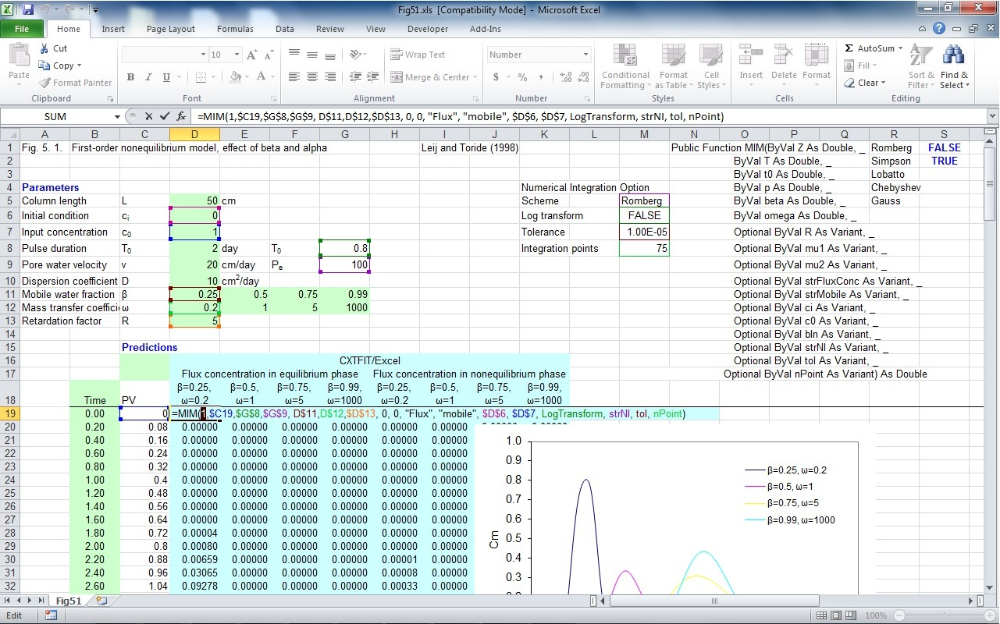

Section 9: Use of Numerical Integration Options
The example Fig. 5.1 in Toride et al. (1995) is used to illustrate the use of numerical integration options. The parameters are input in D5:D13, and E11:G12. The time instants are put in B19:B119. The dimensionless pulse is calculated in cell G8 by formula =D9*D8/D5. The Peclet number is calculated in cell G9 by formula =D9*D5/D10.The five numerical integration schemes are listed in R1:R5, and are used to create a list in cell M5 using menu Data->Validation. Similarly, FALSE and TRUE are listed in S1:S2, and are used to create a list in cell M6. The tolerance is input in M7 for the adaptive numerical integration schemes (Romberg, Simpson, and Lobatto), and the number of integration points are in M8 (Chebyshev and Gauss scheme). Then define strNI, LogTransform, tol, and nPoint for the M5, M6, M7, and M8. The formula for D21 is shown in Fig. 10.1, and can be extended to the rest of the cells for forward solution. Users can select different numerical integration schemes, including if time coordinates are log transformed, change the tolerance or number of integration points and compare the efficiency and accuracy of different schemes.

Fig. 9.1 Illustration of using different numerical integration scheme